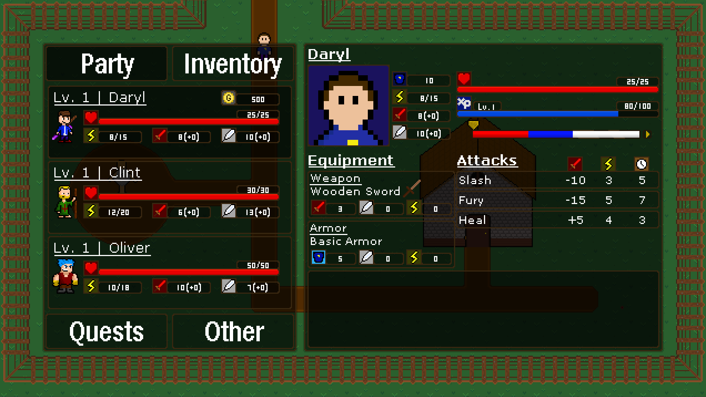
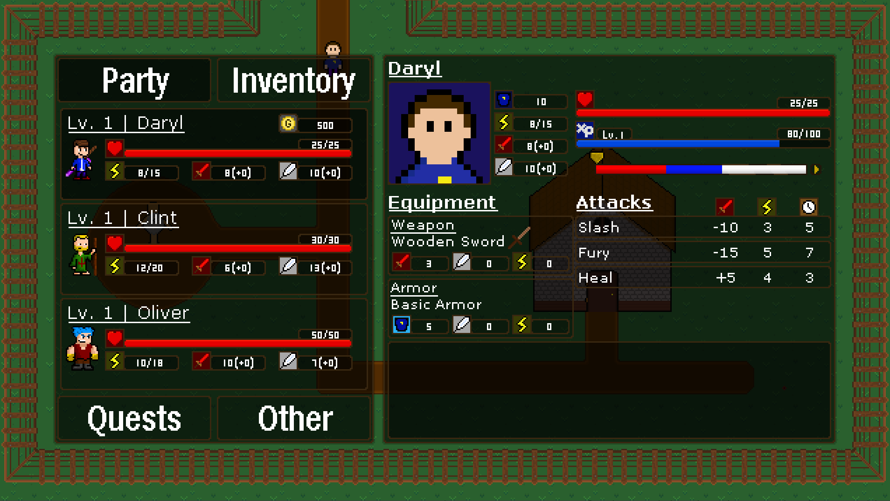

Project Phases
What is it?
Project Phases is a top-down RPG with a unique timeline-based combat system. In combat, every party member and enemy move along a timeline split into different phases. Each phase allows a character to perform different actions such as attack or defend. Overcome enemies by thinking ahead to best position party members for success! In between battles, explore the world through forests and caves to fight off the evil Block Knock Crew.
How?
This game is being made in GameMaker 1.4 and has been my main side project for many years. I started developing it about 6 months after learning how to code, and it has been through many iterations. As I learned and improved my game development skills, Phases would be the place to put what I learned into practice. While it has been an extremely long development process, it has been one of the most valuable learning experiences I've had, and I am greatly looking forward to when it is finally released.
In terms of contributors, I am in charge of all design, programming, music and pretty much everything that isn't spritework. Much of the art is being or has been worked on by some friends, such as Alex Vargas and Tyson Edwards, and freelance artists, such as Nico Nowak.
Throughout its development, I have documented the progress the game has had on both my game development website and YouTube channel. If you are interested in learning more, those are the places to look. Though please keep in mind that the game is still in active development, much has already changed from past updates and will continue to change as development progresses.
Status
This project is in active development. Currently, I am shooting for a 2024 release date. Updates can be found on my game development website here. If you would like to play and early build (for playtesting or demo purposes), feel free to reach out and let me know.
Images
 
